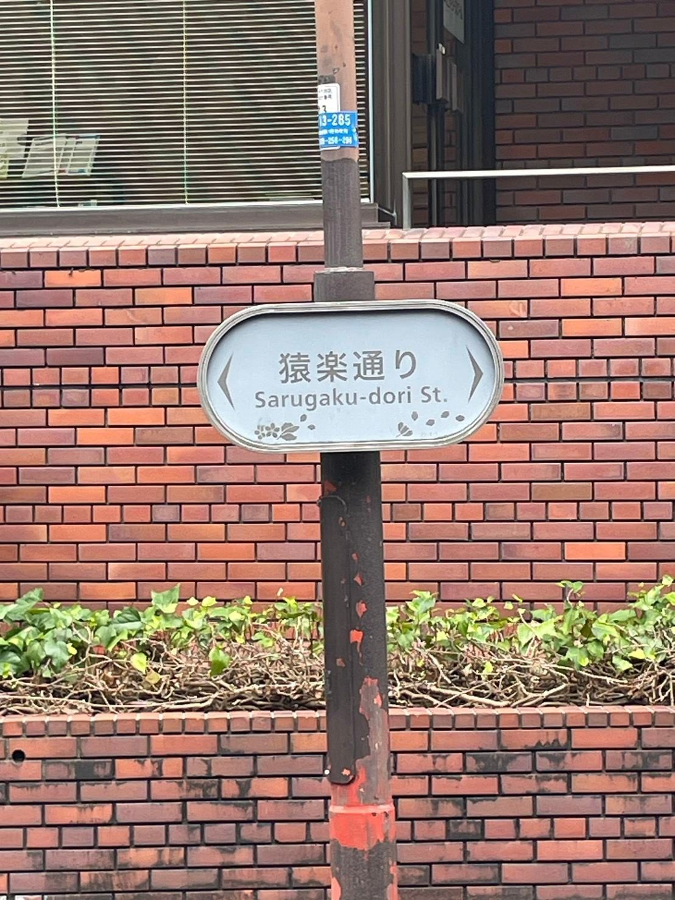
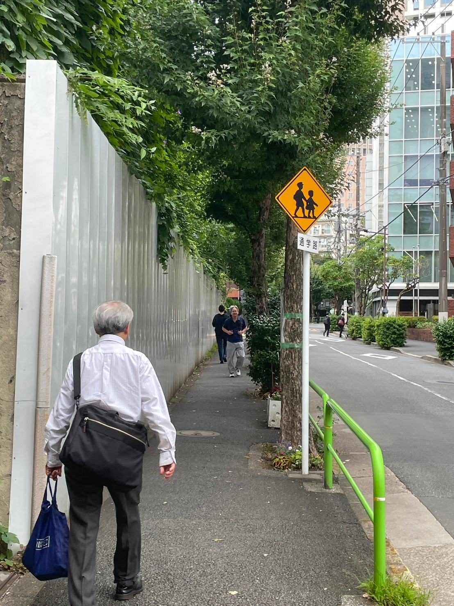
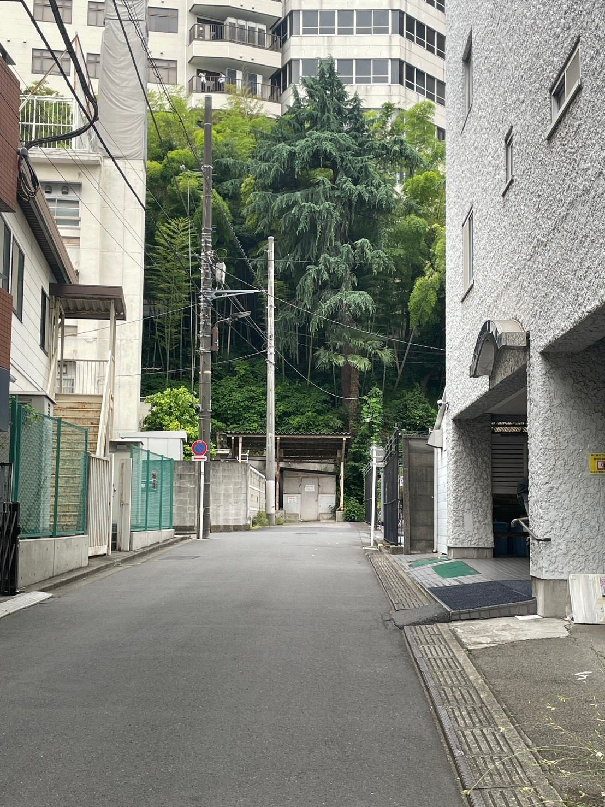
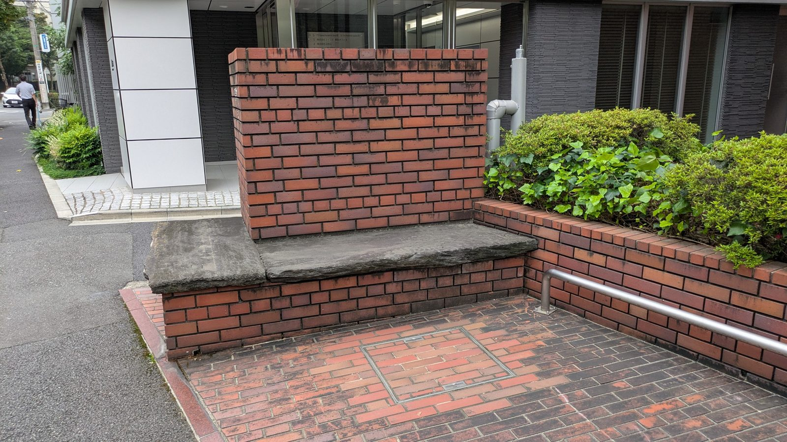
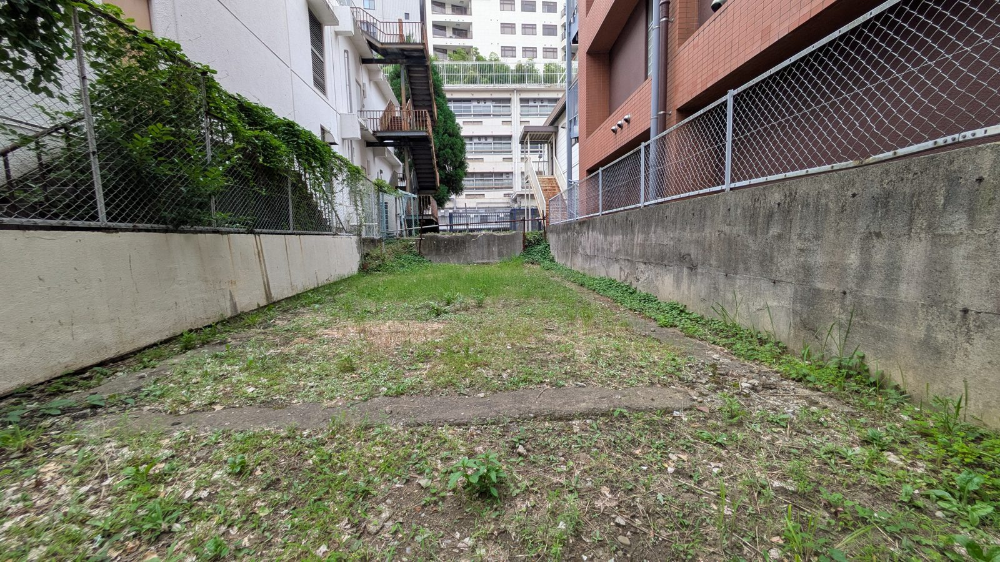

道 01
一番お気に入りのさんぽ道


私は、千代田区をさんぽしていて、特に猿楽通りが気に入りました。猿楽通りは御茶ノ水駅から南西に位置してます。大きな公園があり、会社があり、大学があるこの通りは、いろんな年齢層を感じる通りでとても面白いです。
道 02
自分ならここに寄る

私は、こういった探索欲が湧いてしまうなんでもない道によく寄ってしまいます。ゲームでも、マップはしっかりと埋めて、未踏を無くしたいタイプです。ちょっとした寄り道が生むワクワクは、さんぽの醍醐味です。
道 03
自分ならここで休憩

猿楽通りには座るところが多く、公園だけではなく、道にあったりします。そういったとこで、存分に空気感を堪能し、絶えず動き続ける町の流れを楽しみます。
道 04
自分ならこれが欲しい

米沢嘉博記念図書館の横に空き地があり、ここにちょっとした健康器具がある公園があったら嬉しいです。バランス円盤や背伸ばしベンチ、懸垂バーなどのちょっとした運動ができる公園があれば、空きコマにこの公園を訪れ、軽く運動してさんぽするというルーティンを行います。
終点
締め
私はただ猿楽通りをさんぽして、実際に行動に起こしていないけど、やってみたいこと、実際には無いけど欲しいものなどを書いていきました。そんなちょっとした「もし」を考えるさんぽは楽しかったです。